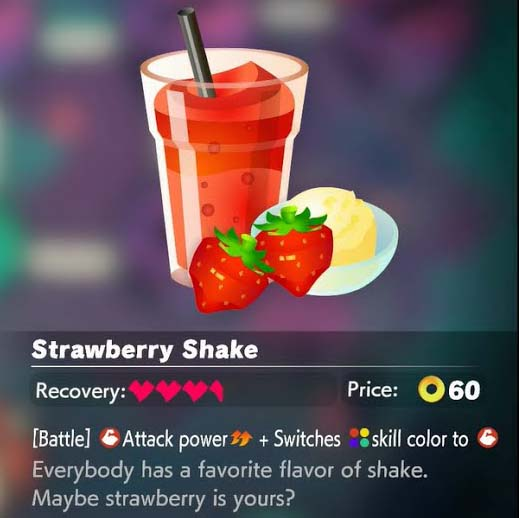
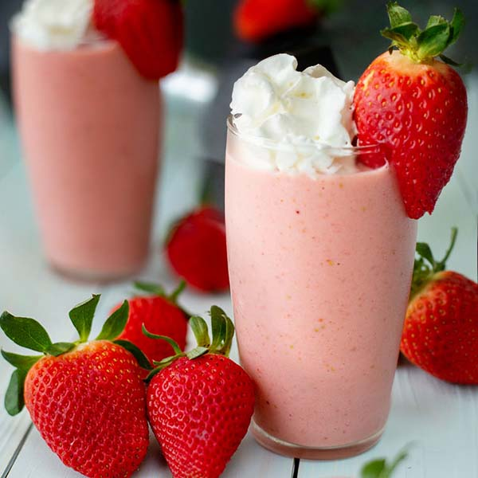

Ring Fit Adventure Strawberry Smoothie
Recipe by Pixelated Provisions


"Let's squeeze!"
In the fitness game Ring Fit Adventure, Strawberry Smoothies buff Arm Skills Attacks. While the in-game recipe just requires three strawberries and a good measure of ring squeezing, here's a tasty take on the treat that will be a little easier on your arms post-workout.
Ingredients
- 1 cup frozen strawberries
- 2 tbsp strawberry jam
- ½ cup greek yogurt
- ¼ – ½ cup almond milk
- ½ tsp vanilla extract
- pinch of salt
Steps
- Place the frozen strawberries, strawberry jam, yogurt, almond milk, vanilla extract, and salt. Blend until smooth. If the mixture is too thick, add additional almond milk. Serve in a tall glass.
Home